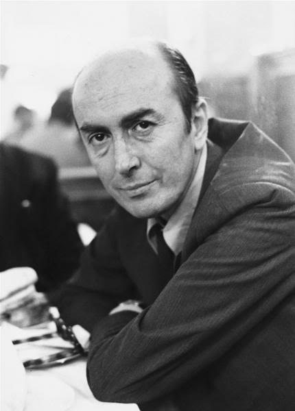

Edip Cansever kimdir
Şiiri yazmakla yetinmeyip yaşamayı tercih eden, madalyonun hangi yüzünü çevirse kuzeyini şiir olarak bellemiş şair, Edip Cansever’in hayat hikayesidir...
Bugün Edip Cansever’in ölüm yıl dönümü; şairlikten başka hiçbir iş bilmeyen o güzel adamın. Hangi ismin biyografisini yazsam onun tesirinde bütün günüm. Bugün de payıma o ve onun güzel şiirleri düştü.
Onun mutlu olmak için sadece şiire ihtiyacı vardı. Bu mutluluğun en fazla bir gün süreceğinin gerçeğini savunuyordu üstelik. Kim bilir, Edip Cansever’in de dediği gibi, belki hakkımız olan mutluluk limiti bu kadarcıktı. Öyleyse değmez miydi? İnsan kendisini mutlu eden şey neyse onun peşinden gitmeli. Gidebilsin ki, dünyanın döndüğünü kalbinde hissedebilsin; basit bir baş dönmesi gibi akıp gitmesin zaman…
Yaşamak için her şiirden, her şarkıdan, bizi “biz” hissettiren her olgudan öğrenecek ne çok şeyimiz var ve insan bunu her seferinde bir kez daha, bıkmadan, usanmadan fark ediyormuş meğer…
Ve iyi ki…

Çocukluğu ve eğitim hayatı
Edip, 8 Ağustos 1928’de, İstanbul Beyazıt’ta Soğanağa Mahallesi’nde Pembe Hanım ve Fazlı Bey’in oğlu olarak dünyaya geldi. Babası ve annesi, Çankırı’nın Atkaracalar İlçesindendiler. Fazlı Bey, askerliğini İstanbul’da yapmış ve burada ticareti de keşfetmişti. Yavaş yavaş başladığı ticaret, Kapalıçarşı, Uzunköprü, Keşan ve başka birçok yerde panayır ve sergilerde alım satım yaptı. Sonunda kendi dükkanını açarak ailesini geçindirdi.
Edip doğduktan sonra aile, Haseki’de bir eve taşındı. Bir türlü sevemediği çocukluk zamanlarını, bu mahalleyi, evlerinde olanları, gün gelip de şu günler geçmiş olduğunda her şeyi, “Ben Ruhi Bey, Nasılım” adını verdiği şiir kitabında anlatacaktı. Ama daha vardı o günlerin gelmesine. Önce sevemediği şu yerde çelimsiz bir çocuk olarak günlerini doldurmalıydı…
Açık kumral saçları, kaburgalarının sayıldığı cılız bedeniyle küçücük bir çocuktu Edip ve gelecekte bir şair olacağı gerçeğine bakılırsa bulunduğu ev bakımından şanssızdı. Çünkü onların evinde uçaklar hakkında bir resimli kitap dışında hiç kitap yoktu. İçindeki bu tılsımı kendisinin keşfetmesi gerekecekti.

(Ayten, Edip, Edibe, Perihan)
II. Dünya Savaşı’nın başladığı dönemde, annesi, babası ve üç kız kardeşiyle Fatih’te bir apartmana taşındılar. Okula başladığı yıllardı ve Edip, artık okumayı biliyordu; okumanın lezzetini de. Semtindeki Millet Kütüphanesi’ne giderek eski “Sanat” dergisi ciltlerini okurdu. Bir şeyler okumanın içine bıraktığı ferahlık paha biçilemezdi.
Sevemediği çocukluğunun içinde sevdiği şeyler de vardı elbette. Erik ağaçlarından çaldığı lezzetini başka yerde bulamayacağı erikleri seviyordu mesela. Şehzade Camii’nin içinde bisiklet kiraladıkları zaman dilimlerini, sıcak yaz günlerinde arsalarda gösterilerini izlediği cambazları, itfaiye binasındaki müzeyi; ama en çok yağmurlu havalarda sinema kapılarında bilet almayı severdi.
Kumkapı Ortaokulu ve İstanbul Erkek Lisesi’ni bitirdi. Daha sonra yükseköğrenim için Yüksek Ticaret Okulu’na da girdi, ancak devam etmedi.
Neyse ki kendini çabuk tanımıştı ve her şeyi hızlı öğreniyordu. İlk şiirlerini yazmaya başladığında ortaokulun ikinci sınıfındaydı. Edip, neleri sevdiğini erken keşfetmişti. Bir çocuk dergisinde bile yayımlandı ilk şiiri…

Erken başlayan iş hayatı
Edip, eğitim hayatını tamamlamadan iş hayatına atıldı. Hayat, onun için erken başlamıştı. 1950’de İstanbul Kapalıçarşı’da ticaret ile başladı çalışmaya. Baba mesleği, bir anda onun da ekmek kapısı oluvermişti. Elbette bir yandan da şiir vardı; ondan hayatı boyunca hiç vazgeçmeyecekti.
Ancak erken atıldığı bu iş hayatı, daha başka şeyleri de hayatına erkenden getirecekti; çok değil, 1-2 yılı vardı…

Şiirle ilk dansı
Edip’in şu hayatta en çok değer verdiği şey yazdığı ve hatta yazmadığı, yazma ihtimali bulunan şiirlerdi. En çok bu konuda çalışıyordu ve istekliydi.
İlk olarak yazığı şiirleri, 1944’te, gencecik bir delikanlıyken “İstanbul” adlı bir dergide yayımladı. Başka dergilerde de şiirlerini yayımlamaya devam etti.
17-18 yaşlarındaydı. Ahmet Hamdi Tanpınar, komşuları Nigar Hanım’ın kardeşiydi ve Edip, ilk şiirlerini ona gösterdi. Tanpınar’ın yorumu, “Bu şiirler çok güzel, hepsi de güzel; ama hiçbiri şiir değil” oldu ve karşısında bu işe gönül verdiğini hissettiren Edip’e uzun uzun resme nasıl bakması gerektiğini anlattı. Hemen eve döndü. Elinde bir sürü resimle gelmişti. Öğrendiklerini uygulama zamanıydı. Uzun uzun bakmalardan sonra, sonradan yayımladığında pişman olacağı, “İkindi Üstü” şiirini yazdı.
Yazacağı şiirlerin daha ilk adımlarıydı bunlar…

(Mefharet Hanım ve Edip Cansever)
Edip Cansever evlendi
Hayatında erken başlayan şeylerden biri de evlilikti. 19’unda evliydi Edip; 20’sinde de baba olmuş gencecik bir adamdı. Mefharet ve Edip, kızlarına Nuran adını verdiler.
Hem ev geçindirmek zorundaydı; bir yandan da şiire tutkunluğu ömürlüktü. 1954’te bir yangında her şey kül olana kadar babadan kalma küçük dükkanda halı ticareti yaptı. Bir yandan ticareti, “Yıllar önce insanların güzel diye yaptıklarını, o güzellik karşısında şaşıran, gülen, sevinen insanlara satıyorum” diye tanımlıyor bir yandan da hiç sevmiyordu. Kapalıçarşı’yı, sınıf ayrımının en somut gözlemlendiği yer olarak görüyor, orada her şeye sadece para değeri için bakılacağını anlatıyordu. En az çocukluk zamanları kadar mutsuzdu bu işten. Neyse ki şiir vardı; onu özgürleştiriyordu…

Tek mutluluk şiir yazmak
Edip, 1951’de arkadaşlarıyla birlikte “Nokta” adını verdikleri bir dergi çıkardı. 1950’lerde şiirlerini farklı bir tarzda kaleme aldı. İlk kitabından itibaren ilgi çekmişti; ancak daha sonra da yarattığı farklılık, edebiyat çevrelerince fark edilmeye başlandı. Şiire, tüm gelenekleri yerle bir eden bir akım, yeni bir soluk getiriyordu Edip Cansever. Hep şiir yazdı; ama bu fark edilme sürecinde şiir hakkında düşüncelerini açıkladığı düzyazılar da yazdı.
Onu şiire yaklaştıran olay kuşkusuz 1954’te meydana gelen Büyük Kapalıçarşı Yangınıydı. Bu yangında dükkanı tamamen yandı. Sigortadan aldığı para da yeni bir dükkan açmaya yetmeyecek kadar azdı; kendine bir ortak buldu. Birkaç ay sonra ortağı Edip’e asma katta istediği kadar çalışabileceğini, kendisinin de alım satım işleriyle ilgilenebileceğini söyledi. Bu, Edip’in hayatındaki en güzel müjdelerden biriydi. Dokuz kitabını Kapalıçarşı’da, bu küçük dükkanın asma katında kendine kurduğu yaşam alanında yazdı. Çalışma alanı denmemeliydi, çünkü burası, onun nefes aldığı, mutluluğu duyumsadığı yerdi. Yıllar sonra bugünleri düşündüğünde hep şöyle iç geçirdi: “Ya o yangın olmasaydı…”
Çünkü Edip Cansever için tek mutluluk, şiir yazmaktı. Biliyordu, bir şiirin verdiği mutluluk, ömürlük olmayacaktı. Olsa olsa bir gün sürerdi. Olsundu; “Belki de bütün mutlulukların toplamı bu kadarcıktır” diyordu kendi kendine…
Edip Cansever, sadece şiir yazan bir şairdi. Şiir yazmadığı zamanlar, zaten onun mutsuzluk zamanlarıydı. Şiir dışında hiçbir şey yazmamış, hatta başka hiçbir şey yapmamıştı. Neredeyse okumaktan başka olumlu hiçbir şey yapmıyordu; yapamazdı. Çocukluğundaki o uçakların resimlerinin olduğu tek kitabı saymazsak, kaçırdığı ne çok kitap olmuştu. Açığı kapatmalıydı belki de…

(Tomris Uyar)
Tomris Uyar'a hayranlığı
Edebiyat dünyasının bilinen gerçeklerindendi Edip Cansever'in Tomris Uyar'a hayranlığı. İnce bir çizgide yürüdü bu duygusu için. İnce ve istikrarlı. Öyle ki, Edip, her 15 Mart'ta Tomris Uyar'ın yeni yaşı için bir şiir yazdı, yayımladı; hayranlığını bıkmadan usanmadan dile getirdi.
Onlardan bir tanesinde şöyle diyordu, bir kuplecik bırakıyorum:
Şu dizeleri yazmıştır onun için;
"Ben seni uzun bir yolda yürürken görmedim ki hiç
Yağmurlar altında gördüm, kadeh tutarken gördüm de
Bir kıyıya bakarken, bakarkenki ağlayan yüzünle
Ve yarışırsa ancak Monet'nin
Kadınlarına yaraşan giysilerinle
Gördüm de
Ben seni uzun bir yolda yürürken görmedim ki hiç.
..."
Tomris Uyar ise, onun bu hayranlık dolu dizeleri karşısında şöyle demişti:
''Sevgililik ya da aşk duygusu zamanla yara alabiliyor, örselenebiliyor, bitebiliyor. Bitmeyen tek aşkın gerçek ve lirik bir dostluk olduğunu Edip Cansever öğretti bana".

Edebi yönü
Edip Cansever, II. Yeni Hareketi içinde yer alıyordu; hatta en önemli isimlerindendi. Şiirlerinde kapalı diye tabir edilen bir anlayışı benimsemişti. Şiiri için bir kişi seçer, onun üzerinden soyut ve somut arasında ani geçişli bir dansa soyunurdu. Hiç dans etti mi ya da sever miydi bilmiyorum; ama onu nedense böyle hayal ediyorum…
Şiirdeki tüm kalıpları yıkmış, ele avuca sığmadan yazıyordu. Mesela “Masa Da Masaymış Ha” çok güzel bir örnek. Masa gibi somut bir nesne üzerinden birçok fikri kapalı, bir yanda da apaçık bir şekilde kaleme aldı. Öyle ki bu şiirle, Edip Cansever’in yaşamdan anladığını, dünya görüşünü kavramak hiç de zor değildi. Çünkü insanlar ve nesneler arasında derin bir bağ vardı. Onun şiirlerini okurken bir tiyatro izliyormuş hissine de kapılmanız, belki bu sebeptendi. Tabii tiyatro diyaloglarını, özellikle de Klasik Yunan üslubu tiyatro diyaloglarının varlığı dışında.
O, şiiri yazmıyor, aslında yaşıyordu…
Masa Da Masaymış Ha
Adam yaşama sevinci içinde
Masaya anahtarlarını koydu.
Bakır kaseye çiçekleri koydu.
Sütünü, yumurtasını koydu.
Pencereden gelen ışığı koydu.
Bisiklet sesini, çıkrık sesini,
Ekmeğin havanın yumuşaklığını koydu.
Adam masaya,
Aklında olup bitenleri koydu.
Ne yapmak istiyordu hayatta,
İşte onu koydu.
Kimi seviyordu, kimi sevmiyordu,
Adam masaya onları da koydu.
Üç kere üç dokuz ederdi;
Adam koydu masaya dokuzu.
Pencere yanındaydı, gökyüzü yanında
Uzandı masaya sonsuzu koydu.
Bir bira içmek istiyordu kaç gündür
Masaya biranın dökülüşünü koydu.
Uykusunu koydu, uyanıklığını koydu.
Tokluğunu, açlığını koydu.
Masa da masaymış ha!
Bana mısın demedi bu kadar yüke!
Bir iki sallandı durdu,
Adam ha babam koyuyordu…

Kitapları ve ödülleri
1957’de “Yerçekimli Laranfil” adını verdiği kitabını yayımladı Edip Cansever. Bu kitaptaki şiirler çok ilgi görmüştü. Öyle ki, ona, 1958’de “Yeditepe Şiir Armağanı”nı kazandırdı. II. Yeni’nin neredeyse tüm özellikleri bu kitapta vardı. Artık Türk Şiiri yeni bir boyut kazanmıştı.
1964’te Mehmet Fuat’ın yönettiği “Yeni Dergi”nin yayın hayatına girdi. Fuat, bu dergide özellikle II. Yenicileri toplamıştı. Edip Cansever, bu dergiye en sadık olan isimlerden biriydi; söz konusu şiir olduğunda hep olduğu gibi. Dergi, 1975’te kapandığından Edip Cansever şiirleri, 1978 – 1980 yılları arasında çıkan, Enis Batur’un yönettiği “Yazı” dergisinde yer alacaktı. 1979’da Doğan Hızlan’ın yönettiği “Hürriyet Gösteri” ve 1981’de yayımlanmaya başlayan “Adam Sanat”ın ilk sayısı da alacaktı bu özel şiirlerden nasibini…
1966 – 1970 yılları arasında da Cemal Süreya’nın Papirüs dergisinde yayımladı şiirlerini. Onun için önemli olan şiirlerini yazıyor ve yayımlıyor olmaktı. Ancak sevdiği insanlarla, şiir gibi özel bir nokta da buluşuyor olmak da ayrı bir keyifti.
1976’ya kadar Kapalıçarşı’daki turistik eşya ve halı ticareti yaptığı dükkanla olan bağını tamamen kopardı ve artık sadece şiir vardı. Bu yıl, kendisi için de Türk Edebiyatı için de bambaşka bir noktada duran kitabını yayımladı: “Ben Ruhi Bey, Nasılım”. O da hak ettiği somut değeri bir yıl içinde buldu; 1977’de TDK Şiir Ödülü’nü aldı.
Son olarak “Yeniden” adını verdiği kitapla tüm şiirlerini bir araya getirdi. Bu kez de 1982’de “Sedat Simavi Edebiyat Ödülü”ne layık görüldü.

Edip Cansever öldü
Edip Cansever neredeyse şiir orada, şiire meze olacak malzemeler neredeyse Edip Cansever de oradaydı. Artık kışları İstanbul’da, yazları da Bodrum’da yaşamaya karar verdi. Bir Edebiyatçı standartlara göre bu şekilde yaşamalıydı galiba.
1986’da İlhan Berk’in de yardımıyla küçük bir ev aldı ve Mayıs ayında eşiyle birlikte Bodrum’a gittiler. Burada beyin kanaması geçirdiği teşhis edilince apar topar İstanbul’a tedaviye getirildi. Ancak çok geçti. Usta Şair, 28 Mayıs’ta hayata veda etti.
Acaba şiirlerine de etti mi diye merak etmeden duramıyor insan… Yani hani annelerin çocuklarını ölse de bırakmadığı inancı vardır ya, sanki Edip Cansever de şiirlerine aynı duyguyla bağlıydı hissiyatındayım şu an.
Öyle ya Cemal Süreya da bir şiirinde şöyle demez mi ardından:
“Yeşil ipek gömleğinin yakası
Büyük zamana düşer.
Her şeyin fazlası zararlıdır ya,
Fazla şiirden öldü Edip Cansever”.
Belki de bu mümkündür; fazla şiirden ölmüştür, kim bilir. Şiire bağlılığı ile anılan, hayatı yaşama rehberi olarak şiiri kullanan ve bunu sıradan bir eylemmişçesine tüm doğallığıyla yapan bir Edip Cansever geçti bu dünyadan…
